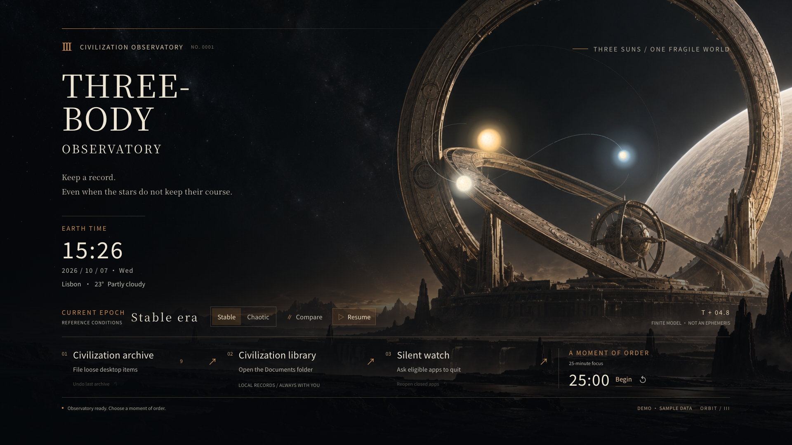
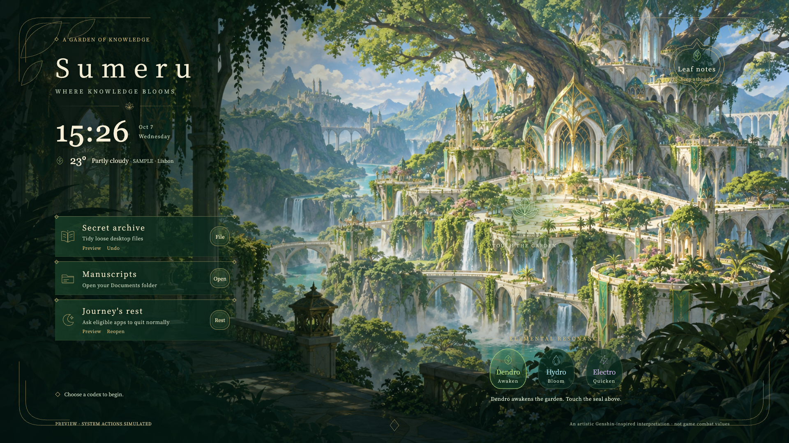

Three-Body · Civilization Observatory
Uncertainty, observation, continuity.Find a little order in an unpredictable world.
Observation and continuity shape how this desktop behaves.

Actual running themeEnter the observatory ↗From a stable era to a chaotic sky
Switch eras and watch the three suns change course. Your pointer becomes an observation probe; a click leaves a local disturbance. The sky responds to your presence.
A small certainty for your attention
Set aside 25 minutes for one task. A focus timer, clock, weather and tools find their place on the same observatory desk.
Keep the everyday world in order
Archive files, open your library and wind down for the night. Each control belongs to the observatory, with a plain description of what it does.
Genshin Impact · Sumeru
Sumeru · Garden of KnowledgeLet knowledge grow into your everyday landscape.
A different rhythm among the tree city, waterfalls and elements.

Actual running themeStep into the garden ↗Touch the garden. Let elements meet.
Leaves unfurl, water blooms and light travels through branching veins. Choose an element for a different response; drifting leaves and water glints keep the quiet garden alive.
Leave a thought beneath the canopy
Open the golden leaf seal and write a note. Scrolls, a clock and the weather take their own forms, staying legible within a richly detailed scene.
Familiar tools, another language of form
Botanical ornament, scrolls and gold detailing become filing tools, a library entrance and a way to end the day. The theme shapes the layout.
These demos use sample weather, files and app data. System buttons simulate actions; they do not operate your computer. The timer works, and notes stay in this browser. Best explored on a desktop browser.
A world with a reason.
Details that belong.
It began with a messy desktop. Then came a wish for buttons that belonged to the scenery, rivers that flowed and a sky that answered the cursor. The lessons from those iterations became this skill.
Your next world can look entirely different: still photography, pixel art, quiet typography or a practical workbench.
Understand the world and the work
Find the theme’s meaning, the tools you need and the limits of your screen and device.
Design the scene, motion and tools together
Connect composition, artwork and feedback while keeping each action easy to find.
See it, use it, then deliver it
Inspect real renders and interactions. Test with temporary data, then verify the chosen desktop host separately.
Keep old worlds. Make room for the next.
Separate theme folders, extensible tools and recoverable operations leave room for your next idea.
The next world begins with you.
“Build a deep-sea research station around exploration and field notes. Give me tasks, a file-library entrance and a focus timer. Let the sonar respond to my cursor.”
Install the skill for Codex or Claude Code and describe what you want. Or download the examples, then preview and switch themes from the launcher.
git clone https://github.com/XIANYU-HW/ai-desktop-designer ~/.agents/skills/ai-desktop-designerHow it runs, starter themes and creative credits
Use Lively on Windows or Plash on macOS; Linux supports browser previews. A separate Python helper supplies local actions. Both featured themes confirm filing and wind-down first. Filing keeps an undo journal; wind-down requests normal app closure. Applications handle unsaved documents and browser sessions. Complex input and performance need testing in the actual host.
Explore the starter themes too: Ink Study · Deep Orbit · Defrag 95. The featured worlds are original, unofficial fan interpretations with no affiliation to Three-Body or Genshin Impact. Trajectories and elemental responses are artistic demonstrations, not scientific predictions or game simulations. Artwork and prompts · Verification record.